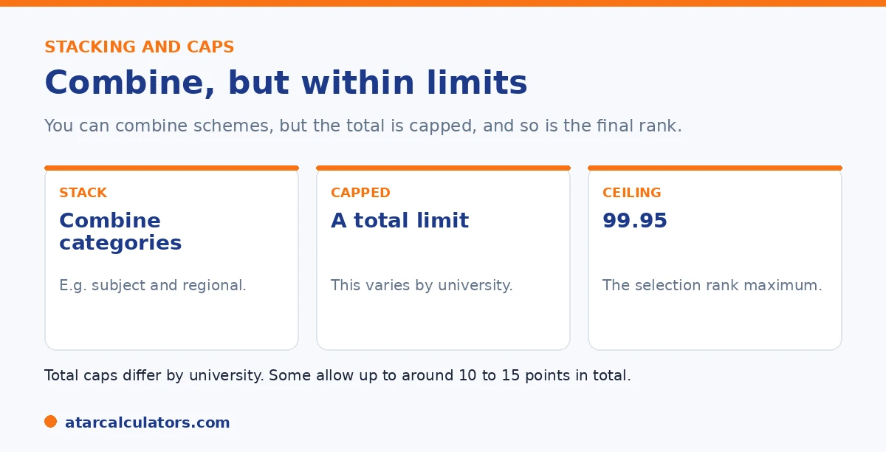

Here is the short version. You can stack adjustment factors across different categories, such as subject and location and equity. But there are limits. Each university caps the total it awards, often somewhere around 10 to 15 points, and within a single scheme the points may not all add up. On top of that, your selection rank cannot go above 99.95. So there is no single universal maximum. This is because the cap varies by university.
It is natural to wonder how high bonus points can go. The honest answer is that it depends on the university, because each sets its own cap.
Below is how stacking works, and the limits. To estimate your total, use our bonus points calculator.
Key takeaways
- You can stack adjustments across different categories.
- Each university caps the total, often around 10 to 15 points.
- Within one scheme, points may not all add up.
- Your selection rank cannot exceed 99.95.
- There is no single universal maximum.
- The cap varies by university, so check each one.
How stacking works
Stacking means combining adjustments from different categories. For example, you might get subject adjustments and location adjustments and an equity adjustment, and these can add together toward your selection rank.

So a student who qualifies in several categories can build a meaningful boost. The limits, though, are where it gets specific.
The university total cap
The main limit is the university's total cap. Each university sets a maximum number of adjustment points it will award in total, no matter how many you qualify for. This is often somewhere around 10 to 15 points, but it varies.
So if you qualify for more than the cap, you get the cap. The exact figure is set by each university, so always check the specific one. There is no single national maximum.
Want to add up your bonus points?
Try the bonus points calculator →Limits within a single scheme
There is a second, smaller limit. Within a single scheme, points often do not all add up. A subject scheme, for instance, may give you the points for your best qualifying subject, not the sum of every one.
So studying several qualifying subjects does not always mean several lots of points. Check each scheme's rules, since this varies by university.
The 99.95 ceiling
Above all the scheme caps sits one hard ceiling. Your selection rank cannot exceed 99.95, the maximum possible ATAR. No amount of adjustments takes you past it.
So a student already near the top gains little from adjustments, while a student below a cut-off has the most to gain. For how the rank is built, see our selection rank guide.
The ceiling explains a pattern that surprises many students. Bonus points are worth most exactly where students assume they matter least. Picture three students. One has an ATAR of 99. Even a generous ten points of eligibility cannot lift their selection rank past 99.95. So barely a fraction of those points does anything. Another sits at 85 with a target course cut-off of 90. The same ten points takes them to 95, comfortably over the line. So every point is doing real work. A third has an ATAR of 70 chasing a course at 95. Here the points help but cannot close a gap that large. The lesson is that adjustments are a mid-range lever. If you are near the top, focus your energy on the ATAR itself. This is because that is what still moves. If you are in the broad middle, treat bonus points seriously. This is because they can be the difference between courses. And if you are far below a target cut-off, use the points where they help but also widen your list to courses your adjusted rank can realistically reach. Reading the ceiling this way keeps expectations honest and directs effort to where it changes outcomes.
Qualifying for more than one adjustment
You can often qualify for more than one type of adjustment at once, for example subject points, regional points and equity points. These stack, but only up to the university’s total cap, which is commonly around 10 points. Beyond the cap, extra qualifying adjustments do not add more.
So stacking helps up to a limit. Qualifying for several schemes is useful, but the total added to your selection rank is bounded by the cap for that course. See how regional and equity bonuses stack.
A realistic maximum
While caps are often around 10 points, the realistic maximum for most students is lower, because you have to genuinely qualify for each adjustment. Few students meet the criteria for the full range of subject, regional, equity and athlete schemes at once.
So treat the cap as a ceiling, not an expectation. A more realistic plan is to identify the adjustments you actually qualify for, and estimate their combined effect up to the cap, rather than assuming the maximum.
Course-specific caps
Caps are not always the same across a university. Some competitive courses set a lower cap on adjustments, or exclude certain schemes, while general courses allow the full range. So the maximum that applies depends on the specific course, not just the university.
This matters most for competitive courses, where adjustments may be limited exactly where you might hope they would help. Always check the cap and eligible schemes for each course you are considering.
Using adjustments strategically
Because adjustments apply per course, they can change which courses are realistic for you. A course whose cutoff is just above your ATAR may become reachable once your adjustments are applied, so it is worth including such courses in your preferences.
So use your likely selection rank, not just your ATAR, when setting preferences. A selection rank calculator can help you see how your adjustments affect each course, so you aim realistically.
Headroom at high ATARs
The 99.95 ceiling means adjustments have less room to help students who already have very high ATARs, because a selection rank cannot exceed 99.95. So a student with an ATAR of 98 has little headroom, while a student with an ATAR of 80 has plenty.
So adjustments make the biggest difference in the middle of the range, where there is room for them to lift a rank across a cutoff. Near the very top, their effect is naturally limited by the ceiling.
Planning around the cap
Because the total is capped, the useful question is not how many schemes you can list, but which combination gets you to the cap for your target courses. Once you reach the cap, additional qualifying adjustments add nothing further.
So identify the adjustments you genuinely qualify for, estimate their combined effect up to the cap, and use that adjusted selection rank when setting your course preferences. Planning around the cap is more useful than chasing every possible scheme.
Common questions
What is the maximum bonus points possible?
There is no single universal maximum, because each university sets its own cap. The total is often somewhere around 10 to 15 points, but it varies. On top of that, your selection rank cannot exceed 99.95.
Can you stack bonus points?
Yes, across different categories. You might combine subject, location, and equity adjustments, and these can add toward your selection rank. But the total is capped by each university, and within a single scheme points may not all add up.
How many adjustment factors can you combine?
You can combine adjustments from different categories, up to the university's total cap, which is often around 10 to 15 points. The exact limit varies by university, so check the specific one you are applying to.
Is there a cap on bonus points?
Yes, two kinds. Each university caps the total it awards, and within a single scheme points may not all add up. On top of both, your selection rank cannot exceed 99.95, the maximum ATAR.
Do points within the same scheme add up?
Often not. Many schemes give you the points for your best qualifying result, not the sum of all of them. For example, a subject scheme may count your strongest subject only. Check each scheme's rules.
Add up your bonus points
See how many adjustment factors you might get and your likely selection rank. Free, and no signup.
Open the bonus points calculator →Related guides
This guide is general information for students and parents, not formal admissions advice. Adjustment factors, schemes, caps and course cut-offs are set by each university and can change every year. They differ from one institution to another, and from course to course within the same institution. Always confirm the current details with the specific university and your state admissions centre (UAC, VTAC, QTAC, SATAC or TISC). A useful starting point is UAC's guide to selection rank adjustments. Reviewed by the ATARCalculators Editorial Team.